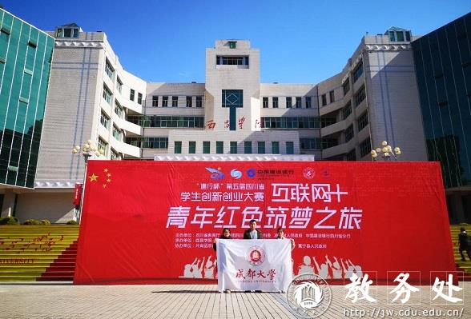

|
12月5日，第五届四川省“互联网+”大学生创新创业大赛“青年红色筑梦之旅”现场对接活动启动仪式在西昌学院隆重举行，本次活动由四川省教育厅、共青团四川省委、凉山州委、凉山州人民政府、中国建设银行四川省分行等单位主办，西昌学院、成都理工大学承办，四川省教育厅一级巡视员胡卫锋、凉山州人大常委会副主任黄凤、共青团四川省委学校部部长黄树良、中国建设银行凉山分行副行长黄河、凉山州扶贫开发局副县级领导张永华、四川省教育厅高教处高波等出席了会议，我校省赛银奖项目《川产濒危中药材种苗培育技术及产业化》学生代表参加了本次活动。

四川省教育厅一级巡视员胡卫锋讲话。他指出省教育厅一直以来高度重视该项赛事并取得了优异成绩，第五届大赛自今年4月份启动以来，组委会共收到来自全省143所学校的107234项作品，参赛学生超过42万人次。其中，红旅参赛项目12471支，参赛人次达50882。他强调，本次活动，是为了深入贯彻习近平总书记重要回信精神，充分利用并发挥好凉山彝海结盟、黄水塘阻击战、礼州会议等红色文化资源，促进广大学生积极投身社会实践，坚定理想信念。他希望，广大青年学子充分展现新时代创新创业生力军的昂扬风貌，传承红色基因，坚定前进方向，扎根中国大地、矢志艰苦奋斗。
此次活动是鼓励各高校大学生创新创业项目团队根据西昌的乡村振兴和扶贫脱贫需求，开展项目调研对接，探索长效合作机制以及学习兄弟高校优秀项目建设的宝贵经验。
近年来，我校高度重视创新创业教育，专门出台了大赛奖励办法，强化政策支持。通过搭建“以赛促学”、“以赛促教”、“以赛促创”的实践训练平台，鼓励广大师生积极投身创新创业热潮，学校连续五年荣获四川省“互联网+”大学生创新创业大赛优秀组织奖称号。“青年红色筑梦之旅”作为全国最大的一堂思政课，其目的在于推动创新创业教育与思想政治教育的融合，引领青年学生走进革命老区、贫困地区接受思想洗礼，学习革命精神，传承红色基因，重温革命前辈伟大而艰辛的创业史，走好新时代青年的新长征，为中国特色社会主义事业培养出更多全面发展的、合格的建设者和接班人。
 |